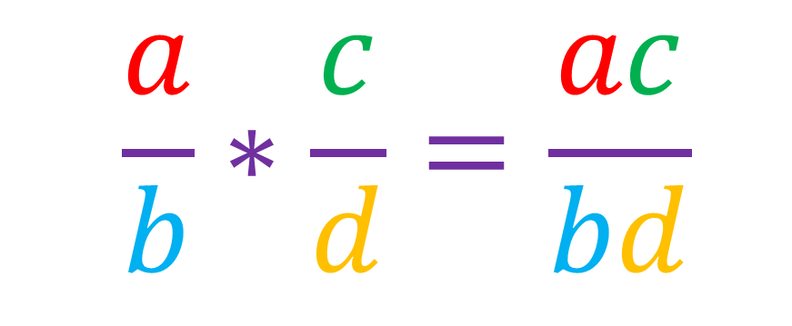
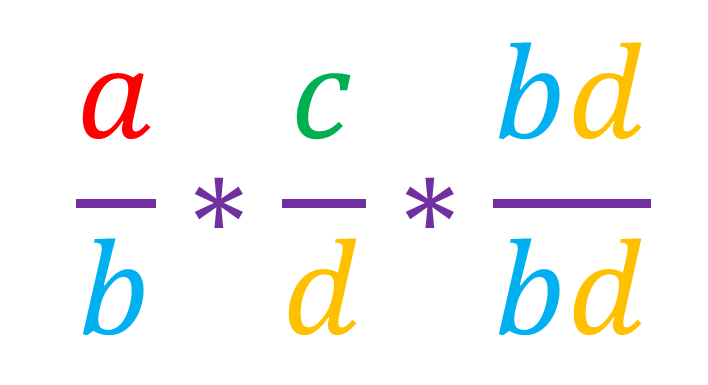
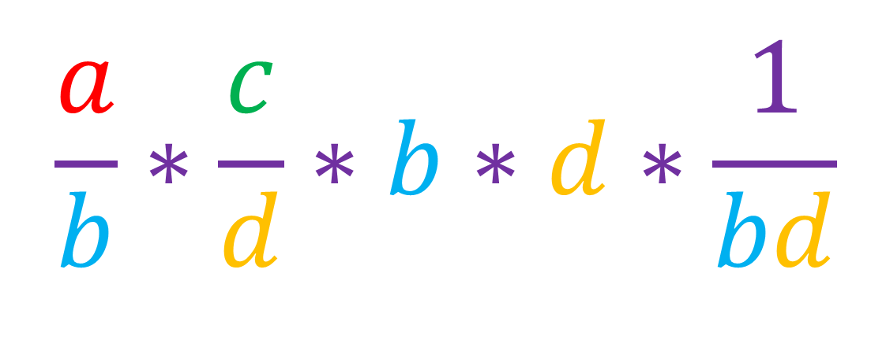
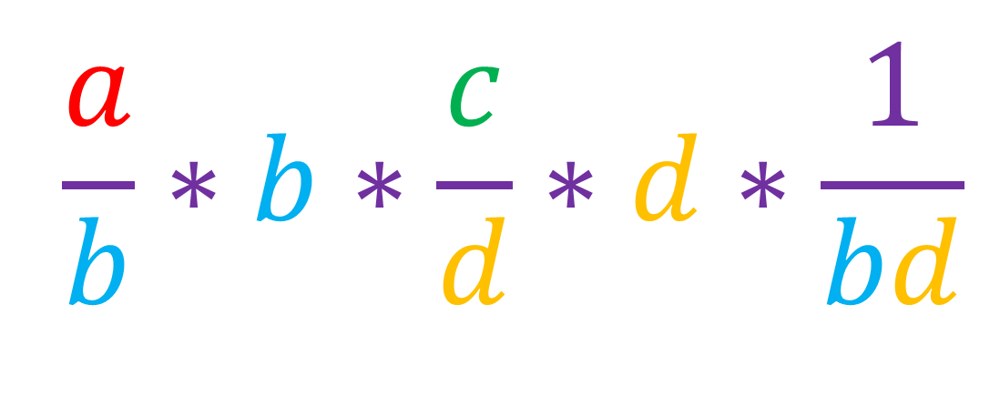
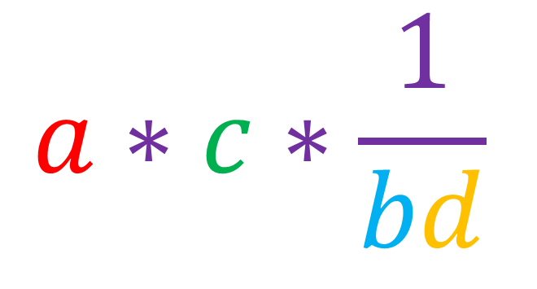
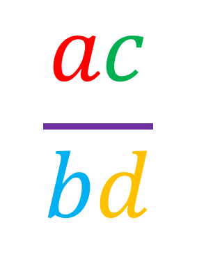

We need to prove that:
Any number (except zero) divided by itself gives 1, so lets try to do [a/b] times [c/d] times [bd/bd]:
We can write this as:
Or:
Since a is being divided by b and then multiplied by b again, then [a/b * b] is just equal to a:
Now we are left with:
